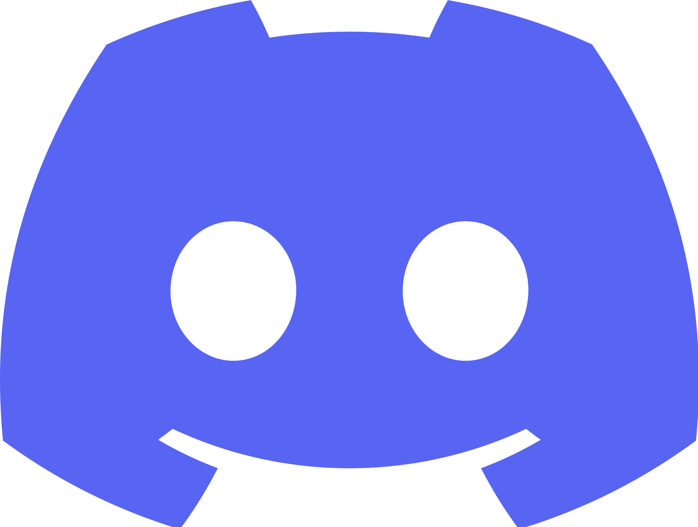

>
WEEEELCOM TO MY ABOUT ME PAGE!
Social media c:
- Discord: amouricat
(Click to copy!)
- Spotify: Click here c:

- Youtube: Click here
- Roblox?: Here c:
- Steam: Profile!
HIIIIIII!
My name is Tristan c:!! and i'm:
- 17 years old
- trash programmer
- cat/dog lover & eevee fan!
- analog horror & horror mysteries fan
- decent leader (not much lately tho)
I love bright colors, but also deep dark blues!
they make me feel calm, happy and nostalgic
i used to be someone ultra social too!
now i just lack the energy, but i still love to meet new friends, talk for a while, help people, learn from people and try my best to do so :3
im not a very worried person at all,
i just try to enjoy every moment while having fun!
BUT i do worry about my loved one a lot c:
YES one, i have a love! her name is Jiin, and shes the best thing that has ever happened to me
Theres so much more to say!
so if u wanna know, feel free to ask or just talk with me :3
maybe we could become friends!
BUT BE AWARE! I cant let go of jiin for more than 10 minutes soo, expect her everywhere around me c:
- trash programmer
- cat/dog lover & eevee fan!
- analog horror & horror mysteries fan
- decent leader (not much lately tho)
I love bright colors, but also deep dark blues!
they make me feel calm, happy and nostalgic
i used to be someone ultra social too!
now i just lack the energy, but i still love to meet new friends, talk for a while, help people, learn from people and try my best to do so :3
im not a very worried person at all,
i just try to enjoy every moment while having fun!
BUT i do worry about my loved one a lot c:
YES one, i have a love! her name is Jiin, and shes the best thing that has ever happened to me
Theres so much more to say!
so if u wanna know, feel free to ask or just talk with me :3
maybe we could become friends!
BUT BE AWARE! I cant let go of jiin for more than 10 minutes soo, expect her everywhere around me c:
Other links!
- Wanna draw us something? (Jiin and me), Click here!
- Wanna check our projects channel?, WELL WE DONT HAVE ONE YET!
- Wanna join our discord projects server!?, WE DONT HAVE ONE YET EITHER